04/03/2024 — Khi thuật toán thông thường chẩn đoán điện tâm đồ là HOÀN TOÀN BÌNH THƯỜNG nhưng thực tế có OMI, ứng dụng AI Queen of Hearts PM Cardio nói gì? (với 10 ca minh họa)
Bản dịch tiếng Việt của bài "When the conventional algorithm diagnoses the ECG as COMPLETELY NORMAL, but there is in fact OMI, what does the Queen of Hearts PM Cardio AI app say? (with 10 case examples)" – Dr. Smith’s ECG Blog. Giữ nguyên toàn bộ 26 hình ảnh của bản gốc.
Tôi đã nhiều lần viết về việc một điện tâm đồ được thuật toán thông thường đọc là “bình thường” hoàn toàn có thể đang biểu hiện OMI, hoặc thậm chí QT dài hay tăng kali máu.
Tôi đã thu thập 51 ca OMI được thuật toán máy tính tự động thông thường chẩn đoán là hoàn toàn bình thường.
Shifa Karim và Gabe Keller đã giúp thực hiện một dự án đánh giá toàn bộ các điện tâm đồ này bằng Queen of Hearts.
Một phần kết quả đã có:
Trong 51 ca OMI có điện tâm đồ “hoàn toàn bình thường” (thậm chí không phải “bất thường ST-T không đặc hiệu”, mà là hoàn toàn bình thường!), 35 ca được Queen of Hearts chẩn đoán là OMI.
Tôi muốn trình bày một số ca ở đây.
Bạn có thể đọc toàn bộ chi tiết trong các đường link nếu muốn.
Ứng dụng Queen of Hearts PM Cardio hiện đã có mặt tại Liên minh châu Âu (được chứng nhận CE) trên App Store và Google Play. Với người Mỹ, bạn cần chờ FDA. Nhưng trong lúc chờ đợi:
BẠN CÓ CƠ HỘI ĐƯỢC TRUY CẬP SỚM VÀO PM Cardio AI BOT!! (ỨNG DỤNG AI OMI CỦA PM CARDIO)
Nếu bạn muốn bot này giúp bạn chẩn đoán sớm OMI và cứu bệnh nhân cùng cơ tim của họ, bạn có thể đăng ký để nhận phiên bản beta sớm của bot tại đây. Bot chưa được phát hành, nhưng đây là cách để bạn có tên trong danh sách.
https://share-eu1.hsforms.com/18cAH0ZK0RoiVG3RjC5dYdwfyfsg (biểu mẫu đăng ký truy cập sớm)
Hoặc dùng mã QR:

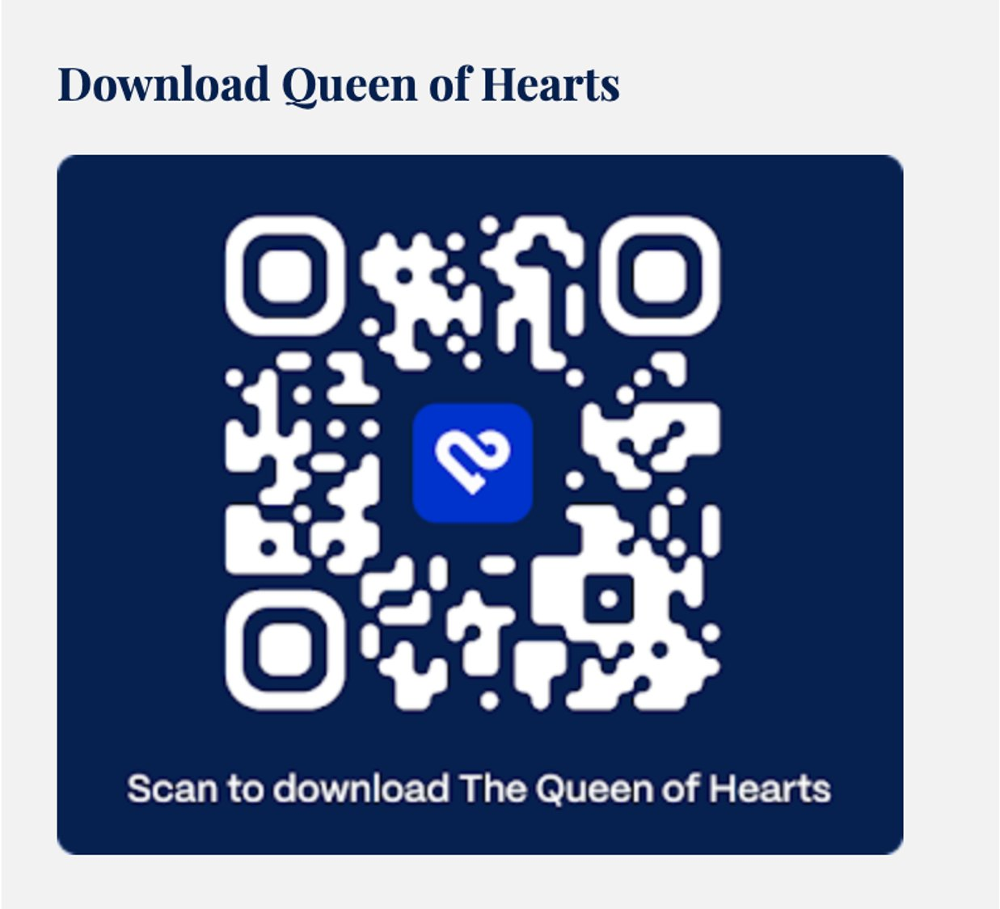
10 ca bệnh:
Ca 1
Bạn có muốn bị làm phiền để xem những điện tâm đồ mà máy tính gọi là bình thường hoặc không đặc hiệu không? 2 ca cùng lúc!

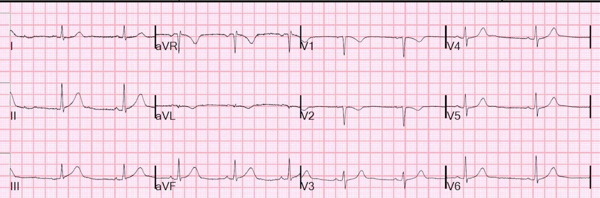
Tắc RCA (OMI), được thuật toán Veritas thông thường gọi là bình thường.
Có sóng T tối cấp ở các chuyển đạo thành dưới, kèm ST chênh xuống (STD) soi gương và sóng T đảo ngược (TWI) ở aVL.
Thuật toán: Veritas (trên máy Mortara)

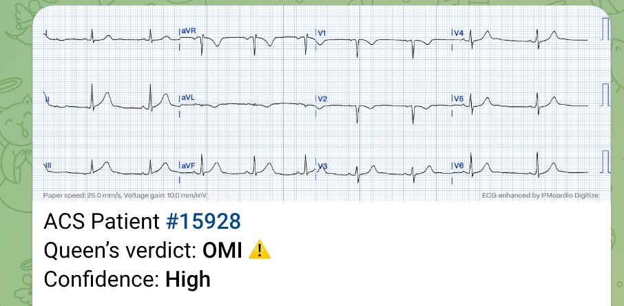
Queen chẩn đoán đúng
Ca 2
A middle-aged woman with chest pain and a “normal” ECG in triage (Một phụ nữ trung niên đau ngực với điện tâm đồ “bình thường” ở khu phân loại). OMI đã không được nhận ra và bệnh nhân ngừng tim ngay tại khu phân loại.

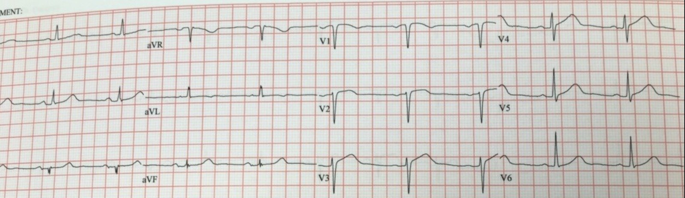
Tắc LAD bị thuật toán thông thường gọi là Bình thường
Có sóng T tối cấp ở V3–V5. OMI do LAD.
Thuật toán GE Marquette 12 SL

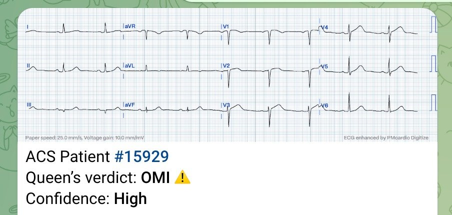
Queen chẩn đoán đúng
Ca 3
Có nên để bác sĩ cấp cứu bị làm phiền bởi những điện tâm đồ được máy tính đọc là “Bình thường” không?

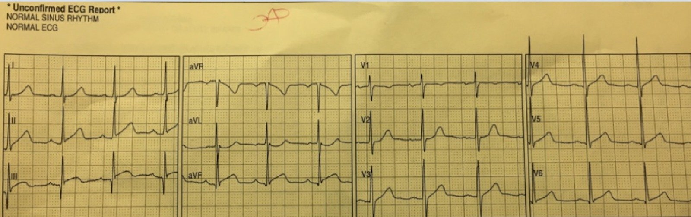
OMI thành dưới-bên bị thuật toán thông thường chẩn đoán là “Bình thường”
Có ST chênh lên (STE) ở chuyển đạo III và aVF, kèm ST chênh xuống soi gương ở aVL
ST chênh lên kín đáo ở V5 và V6.
Không rõ thuật toán

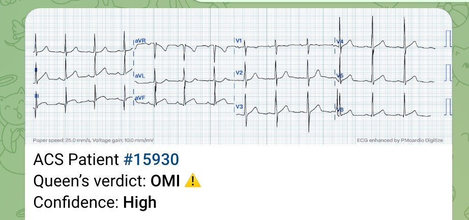
Queen chẩn đoán đúng
Ca 4
Các thuật toán máy tính kém tin cậy đến mức nào trong chẩn đoán STEMI?
Cơn đau đang giảm dần. Được máy tính chẩn đoán là Bình thường. Troponin âm tính. Điện tâm đồ trước viện của bệnh nhân cho thấy đã có STEMI diện rộng và đây là những sóng T tối cấp “đang trên đường đi xuống” khi chúng trở về bình thường.

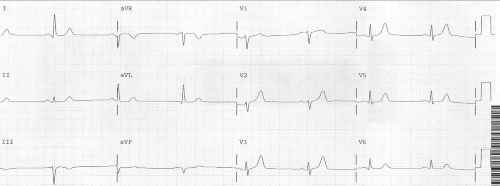
Bản ghi này được gọi là bình thường nhưng có sóng T tối cấp ở V2–V5.
OMI do LAD.
Không rõ thuật toán

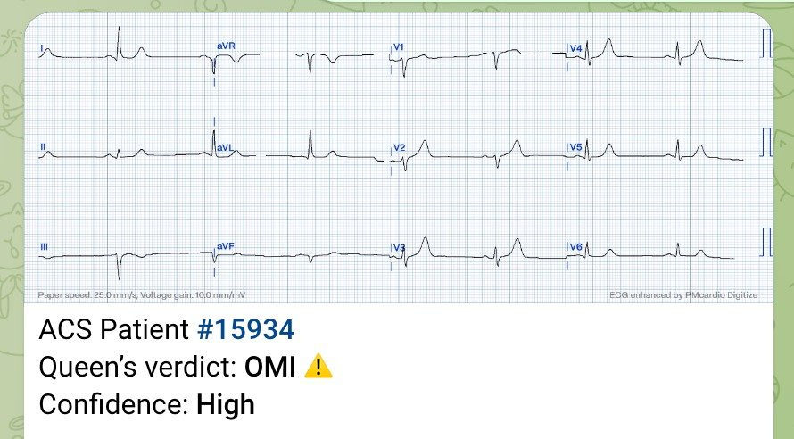
Queen chẩn đoán đúng
Ca 5
Sóng T động (dynamic) kín đáo, sau đó là tắc LAD và ngừng tim

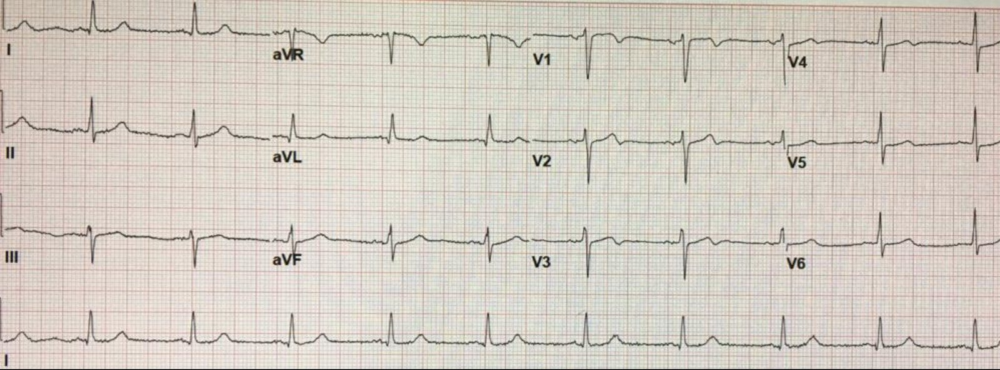
Đây là sóng Wellens ở V2–V4, biểu hiện một huyết khối LAD đang thông (OMI đã tái tưới máu) tại thời điểm này, nhưng có thể tắc lại bất cứ lúc nào. Máy tính gọi là “bình thường.” Các bác sĩ đã không nhận ra.
Bệnh nhân quả thật đã tắc lại và ngừng tim nhưng đã được hồi sức thành công.
Không rõ thuật toán

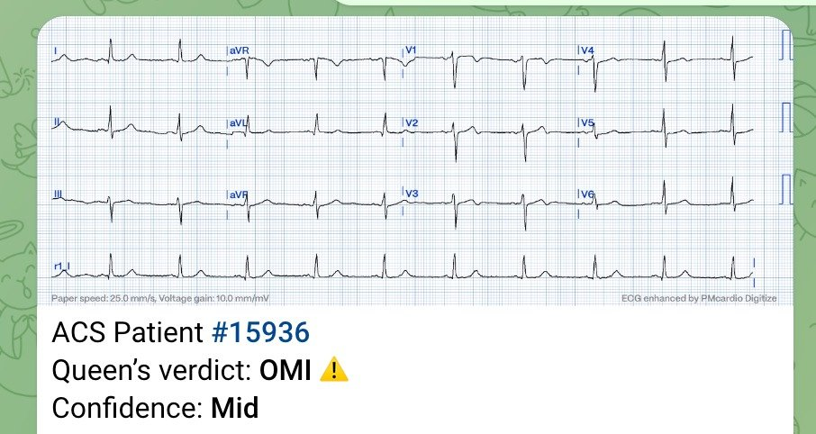
Queen chẩn đoán đúng
Queen đã được dạy phân biệt giữa tắc ĐANG DIỄN RA và ĐÃ TÁI TƯỚI MÁU. Vì vậy nó biết rằng ca này đã tái tưới máu.
Nhưng ở Phiên bản 1, kết quả đầu ra chỉ là OMI hay Không phải OMI, kèm mức độ tin cậy.
(Phiên bản 1 không báo cáo Đang diễn ra hay Đã tái tưới máu)
Ca 6
Một nam giới cao tuổi bị “khó tiêu”

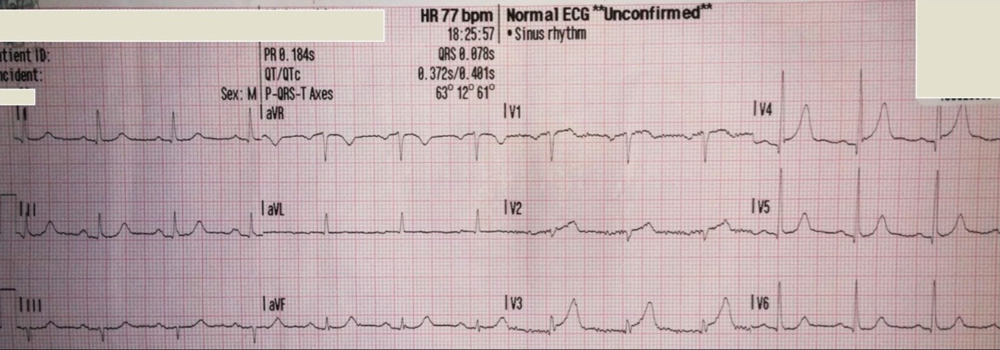
Đây là hình ảnh chẩn đoán tắc LAD, với biến dạng phần cuối QRS (T-QRS-D) và sóng T tối cấp ở V3.

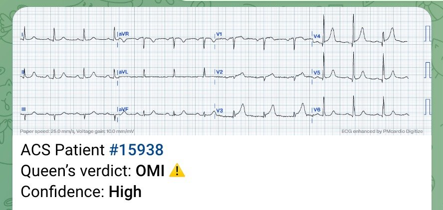
Queen chẩn đoán đúng
Ca 7
Đau ngực giảm sau khi dùng Maalox và lidocaine dạng nhớt. Được máy tính chẩn đoán là Bình thường. Troponin âm tính. Bệnh nhân đang được cho xuất viện với chẩn đoán trào ngược dạ dày-thực quản (GERD) thì ngừng tim.

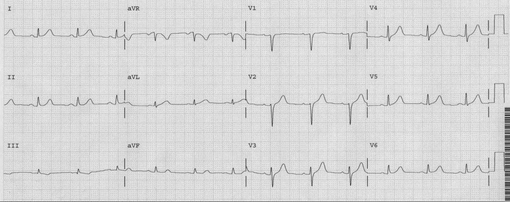
Đây là những sóng T tối cấp.
Không rõ thuật toán

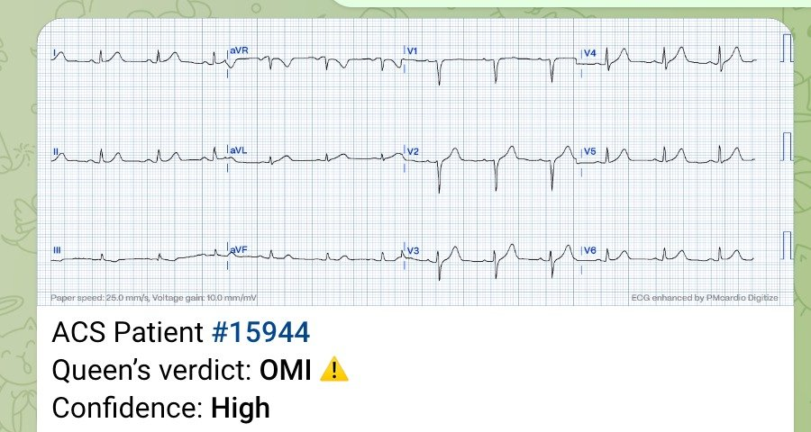
Queen chẩn đoán đúng
Ca 8
Thêm một bài báo thiếu sót nữa được công bố về điện tâm đồ lúc phân loại (triage), với những kết luận cần được xem xét kỹ lưỡng.

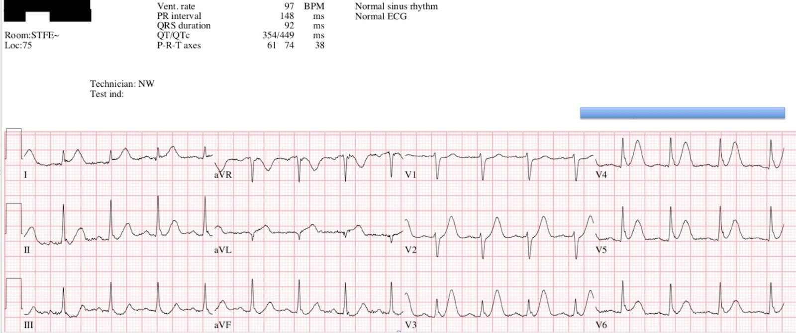
Tắc LAD đoạn gần với ST chênh lên ở I và aVL, và sóng T tối cấp ở V2–V6.
Thuật toán: Marquette 12 SL (GE)
Queen chẩn đoán đúng

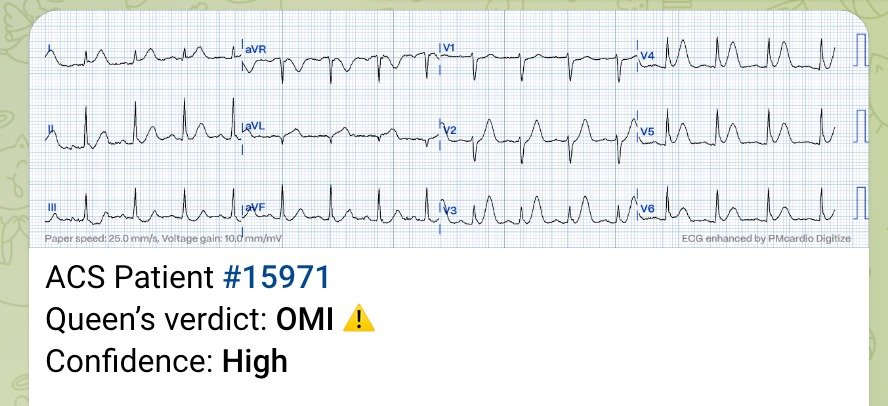
Ca 9 (điện tâm đồ trước viện và tại khoa cấp cứu).
Siêu âm tim, ngay cả (hoặc nhất là) với kỹ thuật đánh dấu mô (speckle tracking), có thể khiến bạn gặp rắc rối. Điện tâm đồ đã nói lên tất cả. Phụ nữ 30 tuổi đau vùng cơ thang. Lộ trình HEART (HEART Pathway) = 0. Máy tính đọc điện tâm đồ “Bình thường”. Thực tế: điện tâm đồ có giá trị chẩn đoán tắc LAD.
Điện tâm đồ trước viện:

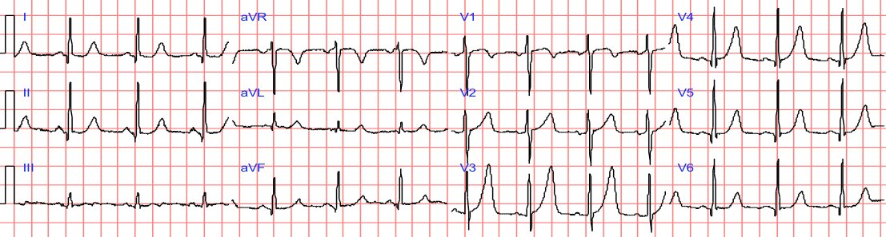
Có sóng T tối cấp ở V3–V5.
Queen chẩn đoán đúng

Điện tâm đồ đầu tiên tại khoa cấp cứu:

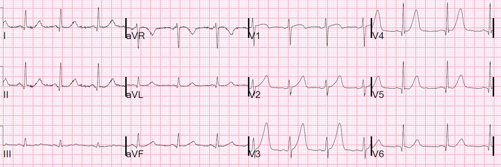
Sóng T tối cấp vẫn tồn tại.
Lại bị gọi là bình thường!
Thuật toán: Veritas (trên máy Mortara)
Queen chẩn đoán đúng

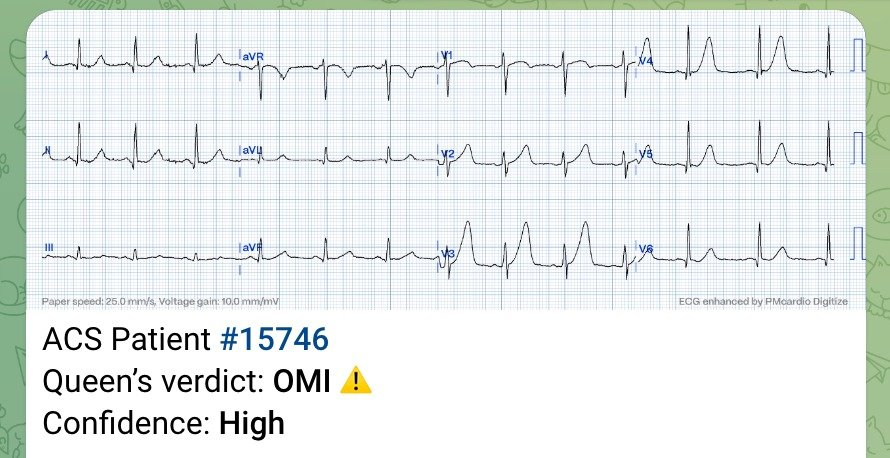
Ca 10:
A Middle Aged Male diagnosed with Gastroesophageal Reflux (Một nam giới trung niên được chẩn đoán trào ngược dạ dày-thực quản)

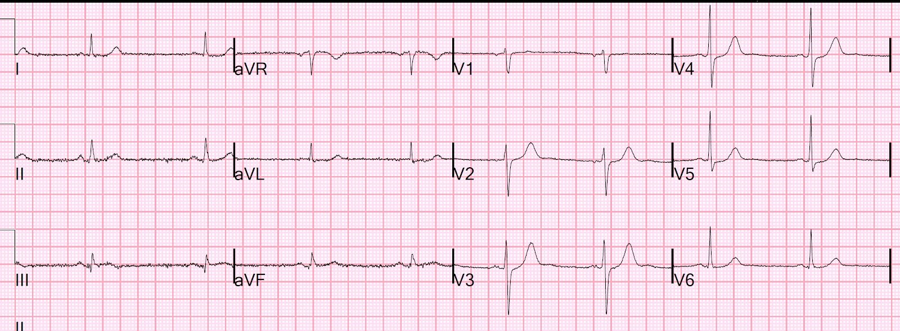
Có ST chênh lên tối thiểu ở chuyển đạo III kèm một ít sóng T đảo ngược, và ST chênh xuống soi gương ở aVL, cũng tối thiểu nhưng rõ ràng là có thật. Cũng có ST chênh xuống ở V2–V4. Đây là OMI thành dưới-sau.
Lại bị gọi là bình thường!
Thuật toán: Veritas (trên máy Mortara)
Queen chẩn đoán đúng

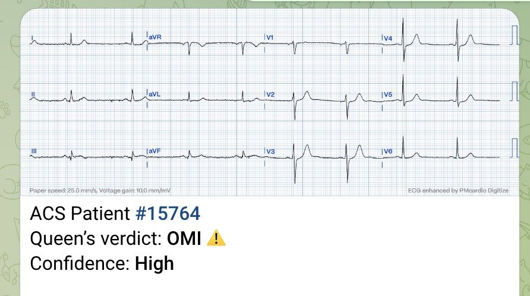
Tải ứng dụng Queen of Hearts PM Cardio hoặc phiên bản Queen trên Telegram:
Ứng dụng
Nếu bạn sống ở EU, Queen of Hearts được tích hợp vào toàn bộ ứng dụng PM Cardio và đã được chứng nhận CE. Ứng dụng đầy đủ có toàn bộ các chẩn đoán điện tâm đồ. Bạn sẽ có 5 lượt dùng miễn phí, sau đó cần trả phí [Nếu bạn sống ngoài EU, bạn vẫn có thể dùng ứng dụng này nếu khi đăng ký bạn khai rằng mình sống ở EU.]
Ứng dụng PM Cardio trên iOS (Apple iPhone)
Ứng dụng PM Cardio trên Google Play (Android)
Xem video hướng dẫn đầy đủ cách dùng ứng dụng tại đây.
Telegram
Nếu bạn sống ở Mỹ, ứng dụng chưa được FDA phê duyệt và bạn cần điền biểu mẫu này để được truy cập Queen, vốn được đặt trên Telegram (nhưng không có các tính năng khác). Bạn có thể dùng không giới hạn số lần.
https://share-eu1.hsforms.com/18cAH0ZK0RoiVG3RjC5dYdwfyfsg (biểu mẫu đăng ký truy cập Queen trên Telegram)
Hoặc dùng mã QR để nhận phiên bản Telegram:


==================================
BÌNH LUẬN CỦA TÔI, bởi KEN GRAUER, MD (4/3/2024):
==================================
Trong bài Blog hôm nay — Dr. Smith hoàn toàn có lý khi than phiền về sự thiếu chính xác của các chương trình đọc điện tâm đồ thông thường trong việc nhận diện OMI cấp.
- Như chúng tôi đã ghi nhận rất nhiều lần trên Blog của Dr. Smith suốt hơn một thập kỷ qua — quá nhiều bác sĩ lâm sàng (kể cả quá nhiều bác sĩ tim mạch) — vẫn “mắc kẹt” trong mô hình STEMI (STEMI Paradigm), đồng thời phớt lờ những dữ liệu ngày càng nhiều từ các nghiên cứu được xác nhận bằng thông tim cho thấy ít nhất 30% các OMI cấp (nhồi máu cơ tim do tắc — Occlusion Myocardial Infarction) bị bỏ sót nếu chỉ dựa vào tiêu chuẩn dựa trên milimét của mô hình STEMI đã lỗi thời.
Vì vậy — chẳng có gì đáng ngạc nhiên khi các chương trình đọc điện tâm đồ thông thường không đủ khả năng nhận diện OMI cấp.
- Dù đã nói như trên — lỗi không nằm ở máy tính — vì các chương trình máy tính chỉ làm đúng những gì chúng được lập trình để làm.
- Các chương trình đọc điện tâm đồ thông thường (tức là hầu như tất cả các chương trình đọc bằng máy tính trước ứng dụng QOH AI Bot) — đã được lập trình theo tiêu chuẩn STEMI — không xét đến bối cảnh lâm sàng (tức là đối chiếu sự hiện diện và mức độ nặng tương đối của triệu chứng với từng điện tâm đồ trong các điện tâm đồ liên tiếp được ghi) — và không xét đến các dấu hiệu điện tâm đồ bổ sung có tương quan với OMI mà chúng tôi thường xuyên nhấn mạnh trên ECG Blog này (Xem Hình 1).
- Vì vậy — Chúng ta không nên kỳ vọng các chương trình đọc điện tâm đồ thông thường đạt được dù chỉ một mức độ chính xác hợp lý trong việc nhận diện OMI cấp. Và vì vậy — Chúng ta không nên dùng các chương trình đọc điện tâm đồ thông thường cho mục đích này.
- Cuối cùng — Những bác sĩ lâm sàng (kể cả bác sĩ tim mạch) mà vào năm 2024 vẫn còn “mắc kẹt” trong mô hình STEMI (và vẫn tiếp tục phớt lờ các dấu hiệu điện tâm đồ khác đã được chứng minh nhận diện OMI cấp đáng tin cậy hơn, như đã nêu trong Hình 1) — những bác sĩ như vậy sẽ tiếp tục trì hoãn (nếu không muốn nói là bỏ sót hoàn toàn) nhu cầu thông tim kịp thời cho những OMI cấp có thể (và lẽ ra phải) được hưởng lợi từ tái thông mạch kịp thời.
===========================
Các ví dụ lâm sàng về những OMI bị các chương trình đọc điện tâm đồ thông thường bỏ sót mà Dr. Smith đưa ra trong phần bàn luận hôm nay — khẳng định rằng chúng ta cần bỏ qua các thuật toán thông thường này.
- Việc đọc điện tâm đồ lâm sàng tối ưu để nhận diện OMI cấp có thể đạt được bằng cách chú ý đến các nguyên tắc được điểm lại trong Webinar 90 phút của các bác sĩ Smith, Meyers và Herman (trong bài ngày 5 tháng Mười Hai năm 2023 trên Dr. Smith’s ECG Blog) — nhiều nguyên tắc trong số đó được tóm tắt trong Hình 1 — và tất cả đều thường xuyên được bàn luận trong các ca bệnh trình bày trên ECG Blog này.
- Mô hình PMcardio OMI AI QOH (Queen Of Hearts) chứng minh rằng lỗi của các chương trình đọc điện tâm đồ thông thường không phải là lỗi của máy tính. Ngược lại — vì QOH đã được lập trình dưới sự hướng dẫn của các bác sĩ Smith và Meyers (với một cơ sở dữ liệu không ngừng mở rộng gồm hơn 18.000 bản ghi được xác nhận bằng kết quả thông tim) — QOH đã cho thấy độ chính xác vượt trội trong nhận diện OMI cấp so với việc dùng tiêu chuẩn STEMI chuẩn (Herman, Meyers, Smith và cs. — Eur Heart J Digital Health — tháng Mười Một năm 2023).
- SUY NGHĨ CỦA TÔI: Việc đọc điện tâm đồ lâm sàng tối ưu có lẽ sẽ đạt được TỐT NHẤT bằng sự kết hợp giữa chuyên môn của các bác sĩ lâm sàng giàu kinh nghiệm với độ chính xác vốn đã ấn tượng và không ngừng được cải thiện của QOH. Có lẽ sẽ luôn cần một mức độ giám sát nhất định của bác sĩ lâm sàng để bảo đảm QOH hoạt động tối ưu — nhưng ý kiến bổ sung mà QOH đưa ra rõ ràng có thể hỗ trợ rất nhiều cho bác sĩ lâm sàng như một công cụ giảng dạy, và giúp tăng sự tự tin và độ chính xác của bác sĩ lâm sàng trong việc nhanh chóng xác định bệnh nhân nào cần thông tim kịp thời.

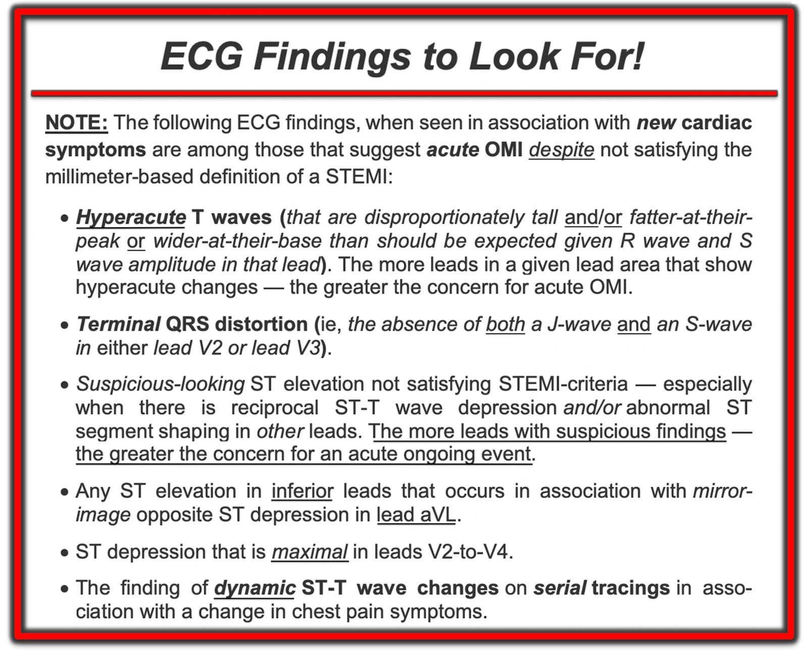
Về Hình minh họa giải thích thêm của tôi cho T-QRS-D (gạch đầu dòng thứ 2) — Xem Bình luận của tôi ở cuối trang trong bài ngày 14 tháng Mười Một năm 2019 của Dr. Smith.
=========================
LƯU Ý CỦA TÁC GIẢ (Editorial NOTE) về các kết quả đọc bằng máy tính:
Là người đã theo dõi sự phát triển của các chương trình đọc điện tâm đồ thông thường trong những thập kỷ gần đây — tôi đã chia sẻ suy nghĩ của mình trong một số bài trước trên Dr. Smith’s ECG Blog về những gì các thuật toán đọc điện tâm đồ thông thường này có thể và không thể làm. Ai quan tâm — Hãy xem Bình luận của tôi ở cuối trang trong các bài sau:
- Bài ngày 31 tháng Ba năm 2023 —
- Bài ngày 4 tháng Hai năm 2022 —
- Bài ngày 23 tháng Năm năm 2023 —
ĐIỀU CỐT LÕI:
Tôi thấy những điều sau đây là đúng bất kể bạn đang có sẵn một chương trình đọc điện tâm đồ thông thường hay QOH:
- Đừng bao giờ nhìn vào kết quả máy tính cho đến sau khi bạn đã buộc bản thân tự đọc điện tâm đồ của bệnh nhân cùng với các thông tin lâm sàng sẵn có.
- Chỉ KHI ĐÓ — Mới nhìn vào kết quả máy tính. Bạn có đồng ý không?
- Hãy nhận thức rằng NẾU chương trình bạn có dựa trên một thuật toán điện tâm đồ thông thường — thì đây không phải là những chương trình đáng tin cậy để nhận diện OMI cấp (tức là Có quá nhiều dương tính giả và âm tính giả!).
- NẾU bạn có QOH — Bạn có thể yên tâm NẾU nhận định lâm sàng của bạn trùng với nhận định của QOH.
- Ngược lại, NẾU cách đọc của bạn khác với kết quả QOH đưa ra — hãy QUAY LẠI từ đầu, và nhận thức rằng trừ khi bạn có thể đưa ra một lý do xác đáng giải thích vì sao QOH có thể sai (tức là nhiễu, việc bạn có sẵn các bản ghi liên tiếp hoặc bản ghi trước đó) — thì ứng dụng QOH AI thường là chính xác.
- Hãy nhớ rằng mô hình QOH PMcardio OMI AI sẽ tiếp tục tốt hơn khi được lập trình thêm hàng nghìn điện tâm đồ (tất cả đều có dữ liệu được xác nhận bằng thông tim) — và khi QOH có khả năng, như nó sẽ có theo thời gian, — tích hợp các bản ghi trước đó và các bản ghi liên tiếp, cũng như thông tin bệnh sử vào kết quả đọc của mình.